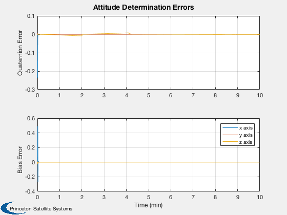
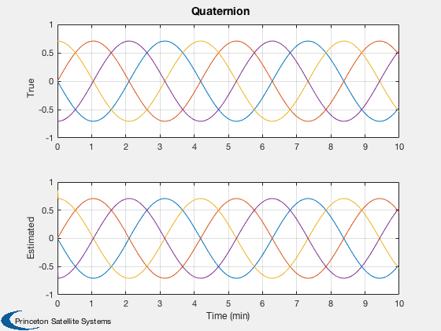
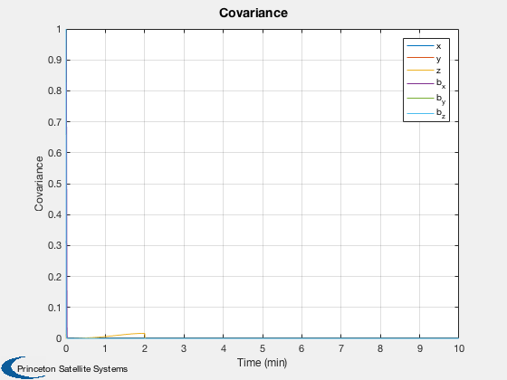
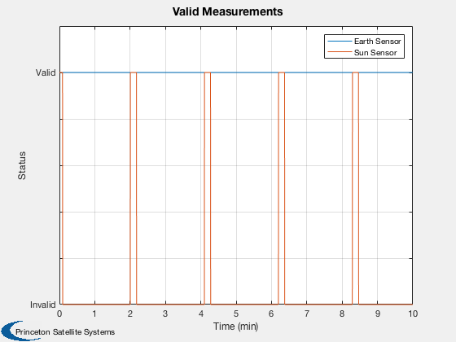

Contents
Test attitude determination with sun, earth and magnetometer.
dT is the time step for the attitude determination system. You can numerically integrate with a smaller time step by setting nInt > 1. The initial attitude is unknown. This demo uses the sun earth and magnetic field as attitude sources. The earth provides roll and pitch while the sun provides yaw. The magnetic field provide orientation with respect to the local field lines.
When using the UKF it is important to pick an appropriate plant noise matrix. If it is too high the filter may go unstable and produce large errors. With a gyro it is generally small. The terms for the delta quaternion and the bias are not the same (although they are in this demo). The choice of the UKF alpha parameter is also important. You will notice that it takes a few sun measurements for the filter to properly estimate the bias.
%-------------------------------------------------------------------------- % See also SunMagAttDet, RVFromKepler, SunV1, FPSensors, RIGOut, BDipole %--------------------------------------------------------------------------
%-------------------------------------------------------------------------- % Copyright (c) 2017 Princeton Satellite Systems, Inc. % All rights reserved. %-------------------------------------------------------------------------- rng('default');
Constants
degToRad = pi/180;
Simulation data
nInt = 2; useMag = false;
Spacecraft data
inr = [1000 0 0;0 2000 0; 0 0 2000]; invInr = inv(inr); torque = zeros(3,1);
Gyro data
uRIG = eye(3); % The sensor boresight is the z axis % Column 1 is the earth sensor, Column 2 is the sun sensor qBToS = [1 cos(pi/4);0 0;0 sin(pi/4);0 0]; dQ = [0;0;0.1;0.1]; fov = [30 30;30 30]*degToRad; fScale = 1; nRWRIG = zeros(3,1); nBRIG = zeros(3,1); nORIG = zeros(3,1); betaRIG = zeros(3,1); % Time tEnd = 600; t = 0; dT = 0.25; nSim = tEnd/dT;
Set up arrays for plotting
xPlot = zeros(13,nSim); qPlot = zeros( 4,nSim); pPlot = zeros( 6,nSim); bPlot = zeros( 3,nSim); tPlot = zeros( 1,nSim); qEPlot = zeros( 4,nSim); vMPlot = zeros( 2,nSim); angInc = zeros(3,1); xRIGOld = zeros(3,1);
Estimator initialization
b = zeros(3,1); % Noise values r = struct('fP',0.0001,'uB',0.0001);
Generate the orbit
tOrbit = (0:(nSim-1))*dT;
% el = [a,i,W,w,e,M]. The spacecraft is in geosynchronous orbit
[rECI, vECI] = RVFromKepler( [42167 0 0 0 0 pi/2], tOrbit );
Initial conditions at equinox
jD = Date2JD([2000 3 20 7 26 0]) + (tOrbit + 6*3600)/86400;
Sun and earth vectors
uNadir = -Unit( rECI );
uSun = SunV1( jD, rECI );
uB = Unit(BDipole( rECI, jD ));
xBAxis = [1;0;0];
yBAxis = [0;1;0];
% Initialize the uKF
ukf = SunEarthMagAttDet;
Initial state
omega = [0;0;0.05]; bias = [-0.0001; -0.0001; 0.000]; intRate = [0;0;0]; qSim = QLVLH(rECI(:,1),vECI(:,1)); % Quaternion, body rates, integrated rate, gyro biases x = [qSim; omega; intRate; bias]; % Estimated quaternion q = QUnit(qSim + dQ);
Run the simulation
for k = 1:nSim % Quaternion qSim = x(1:4); % Sun and Earth measurements catalog = [uNadir(:,k) uSun(:,k)]; sensorData.fP = FPSensors( qSim, qBToS, catalog, fov, fScale ); sensorData.fP.catalog = catalog; sensorData.fP.qBToS = qBToS; sensorData.fP.fScale = fScale; % Magnetic field measurements uBB = Unit(QForm( qSim, uB(:,k) )); [az, el] = U2AzEl( uBB, xBAxis, yBAxis ); sensorData.b = struct('az',az,'el',el,'rECI', rECI(:,k), 'jD', jD(k), 'valid', useMag,'xAxis',xBAxis,'yAxis', yBAxis); % Rate integrating gyro [angInc, xRIGOld] = RIGOut( x(8:10), xRIGOld, nORIG ); % Attitude determination [q,b,ukf] = SunEarthMagAttDet( angInc, q, b, ukf, r, dT, sensorData ); err_x_q_b = [QMult( QPose(q), qSim ), qSim, q, [0;b], [0;x(11:13)]]; % Plotting qPlot(:,k) = err_x_q_b(:,1); pPlot(:,k) = diag(ukf.p); bPlot(:,k) = b; xPlot(:,k) = x; tPlot(k) = t; qEPlot(:,k) = q; vMPlot(:,k) = sensorData.fP.valid; % Simulation for j = 1:nInt x = RK4( @FRBwRIG, x, dT/nInt, t, inr, invInr, torque, uRIG, nRWRIG, nBRIG, betaRIG ); x(1:4) = QUnit(x(1:4)); t = t + dT/nInt; end end
Plot results
j = 1:k;
[t,tL] = TimeLabl(tPlot(j));
yL = {'Quaternion Error' 'Bias Error'};
Plot2D( t, [qPlot(2:4,j);xPlot(11:13,j)-bPlot(:,j)],tL,yL,'Attitude Determination Errors','lin',['1:3';'4:6'])
legend('x axis','y axis','z axis')
yL = {'True' 'Estimated'};
Plot2D( t, [xPlot( 1: 4,j);qEPlot(:,j)],tL,yL,'Quaternion','lin',['1:4';'5:8'])
Plot2D( t, pPlot(:,j),tL,'Covariance','Covariance')
legend('x','y','z','b_x','b_y','b_z');
Plot2D( t, vMPlot(:,j),tL,'Status','Valid Measurements')
legend('Earth Sensor','Sun Sensor')
% Making the axis labels easier to understand
set(gca,'ylim',[0 1.2]);
set(gca,'yticklabel',{'Invalid' '' '' '' '' 'Valid' ''});
%--------------------------------------
   